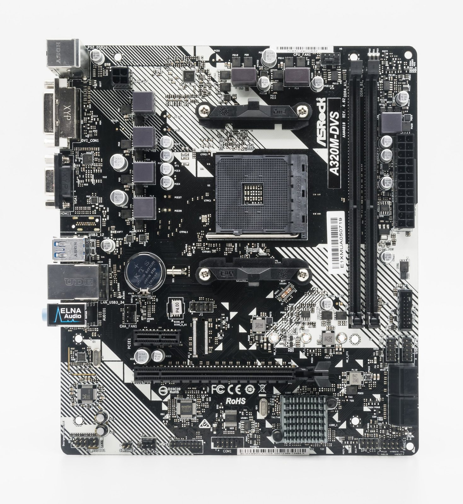
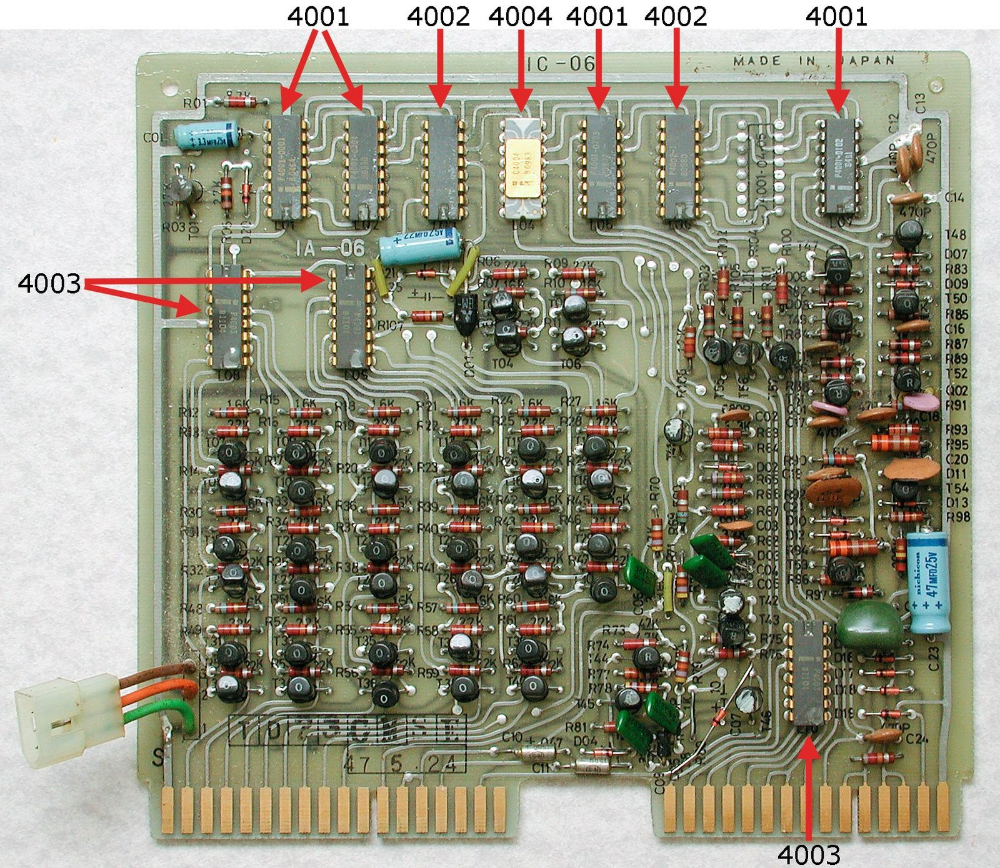
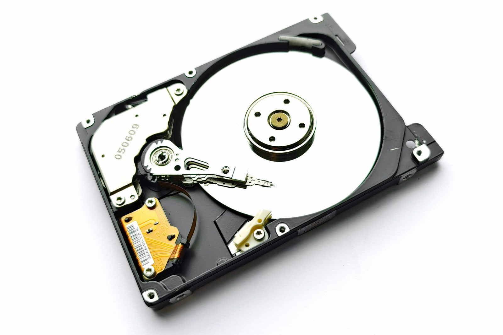
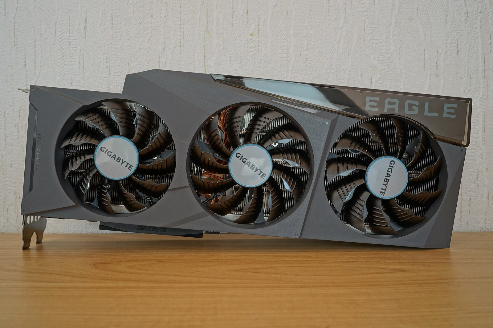
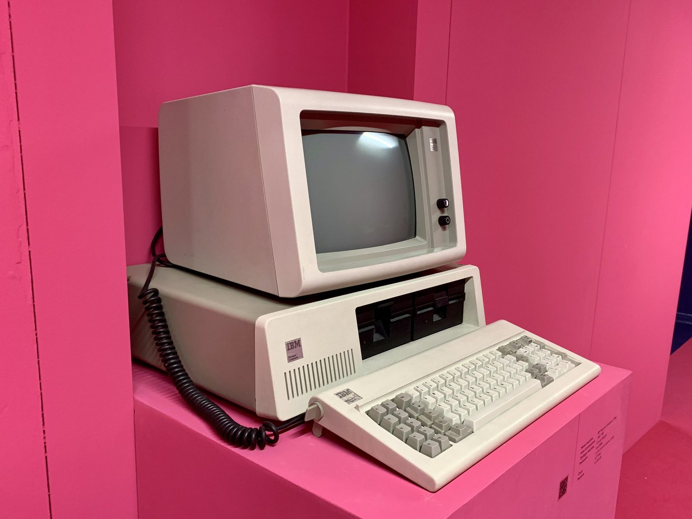
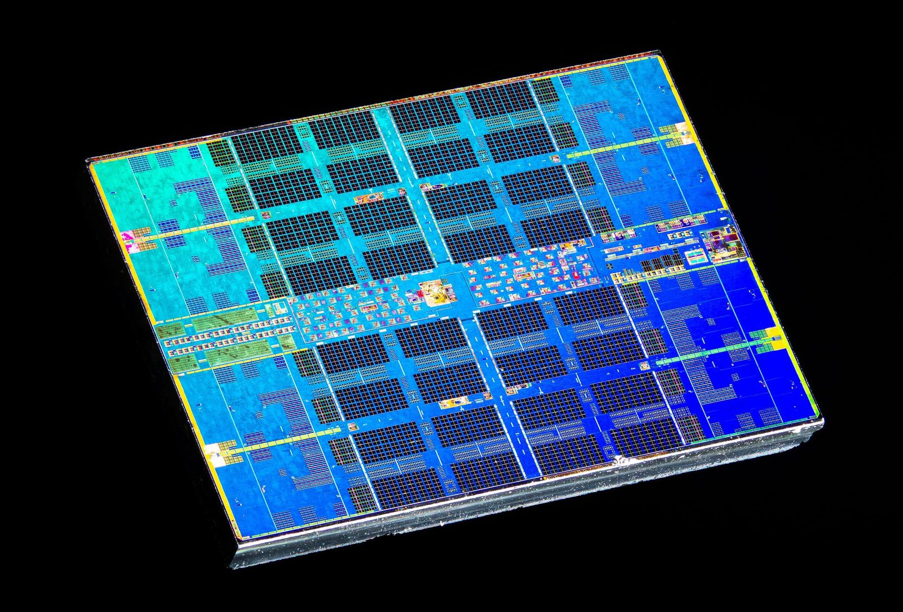
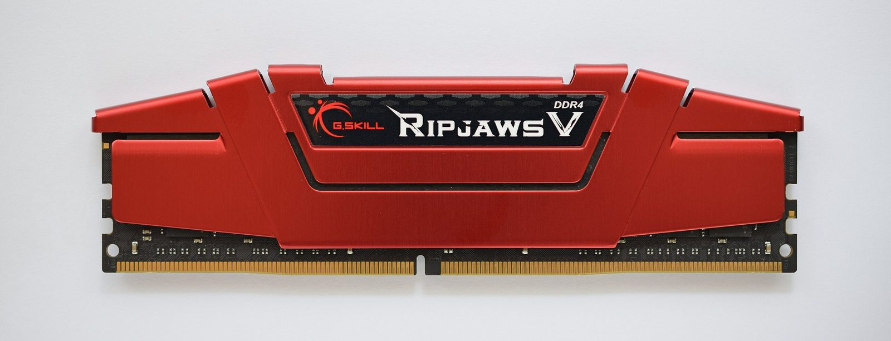

Unit 1 · Lesson 2
Inside the box
The main components of a computer, how they talk to each other, and how to read a laptop advert like an engineer.
What the test will ask
After this lesson you should be able to:
- Draw and explain the von Neumann architecture: CPU (control unit + ALU + registers), memory, input, output, buses, and the stored-program idea.
- Name what plugs into the motherboard: CPU socket, RAM slots, chipset, expansion slots (PCIe), storage connectors (M.2, SATA), ports, power.
- Describe the fetch–decode–execute cycle and explain cores, clock speed (GHz) and cache.
- Explain why GHz alone does not tell you which CPU is faster (cores, IPC, cache, benchmarks).
- State Moore's law and read the transistor chart (2,300 in 1971 → 28 billion in 2024).
- Compare RAM and ROM (volatile / non-volatile, read-write / read-only, what they hold) and know what capacity, DDR generation and dual channel mean.
- Compare magnetic, optical and solid-state storage and know the units bit → byte → KB → MB → GB → TB.
- Explain why an SSD feels so much faster than an HDD (random access, IOPS) and what NVMe is.
- Say what a GPU is, why it has thousands of cores, and why the same chips train AI; know VRAM and integrated vs dedicated graphics.
- Find the bottleneck of a computer for a given task.
The story
In June 1945 the mathematician John von Neumann wrote down a drawing that every computer since has followed: a processor with a part that reads instructions and a part that does arithmetic, a memory that holds both the instructions and the data, input and output, and wires called buses connecting them. The most important idea is the simplest: the program lives in the memory with the data. That is Turing's tape built out of electronics.


Open a PC and you see the drawing in metal. The motherboard is the board everything plugs into: the CPU sits in its socket under a fan; the RAM sticks are next to it; the long slots take the graphics card; the SSD clips onto a small connector; the power supply feeds the lot.
The CPU does one thing, forever: fetch the next instruction from memory, decode it, execute it, and go back for the next one, billions of times a second. In 1971 the whole CPU fitted on one chip for the first time: the Intel 4004, 2,300 transistors, designed by Federico Faggin from Vicenza for a Japanese calculator. Gordon Moore had predicted in 1965 that the number of transistors on a chip would double every year or two; fifty years later the Apple M4 has 28 billion.


Memory comes in two flavours. RAM is the desk: what you are working on now, fast, and cleared when the power goes. ROM is the card taped to the desk with the start-up instructions: tiny, permanent. The bookshelf, where everything you own lives when the power is off, is storage: a spinning hard disk, a CD, or the flash chips of an SSD.


The newest star is the GPU. Invented to draw pixels, thousands of small cores doing the same simple sums at once, it turned out to be exactly what neural networks need. In 2012 three researchers in Toronto trained a network on two gaming cards in a bedroom and started the AI boom; by 2025 the company that makes the chips, NVIDIA, was worth four trillion dollars.


And one rule to carry into the next activity: a computer is only as fast as its slowest part for the job you are doing. Balance beats the biggest number.
The notes
Everything from the lesson, in order. This is the part to study.
Von Neumann architecture (1945)
Stored program: instructions and data share the same memory; the CPU fetches instructions from memory one by one. Almost every computer follows this blueprint.
- CPU (central processing unit) = Control Unit (fetches and decodes, sends control signals) + ALU (arithmetic and logic: add, compare, AND/OR) + registers (a handful of ultra-fast storage cells inside the CPU, e.g. the Program Counter holding the address of the next instruction).
- Memory (RAM): holds the program and the data in use.
- Input and output devices.
- Buses: shared wires. Address bus: where? Data bus: what? Control bus: read or write, when?
- Also on the CPU: cache, a small, very fast memory next to the cores.

.jpg){kind=link}
The motherboard: what plugs in where
| Part | What it is for |
|---|---|
| CPU socket | the processor sits here, under a heatsink and fan |
| RAM slots (DIMM) | 2–4 sticks of working memory |
| Chipset | the traffic controller between CPU, memory, storage and ports |
| Expansion slots (PCIe) | graphics card, sound card, Wi-Fi card |
| Storage connectors | M.2 for NVMe SSDs, SATA for hard disks and older SSDs |
| Ports | USB, HDMI, Ethernet, audio |
| Power connector | from the power supply (PSU) |
| CMOS battery | a coin cell that keeps the clock and settings when unplugged |
| Firmware chip | the BIOS/UEFI (ROM) |
In a laptop or phone most of this is soldered onto one board: thinner and lighter, but nothing can be upgraded.
The CPU: fetch, decode, execute
- Fetch
- Decode
- Execute
- Fetch: get the next instruction from memory (the Program Counter says where).
- Decode: the Control Unit works out what it means.
- Execute: the ALU calculates, data moves to a register or to memory. Then the next one, billions of times a second.
The CPU does not know it is playing Minecraft: it sees numbers and does what the next number says. We call it 'the brain', but it only follows rules.
CPU performance: the numbers on the box
| Parameter | What it measures | Typical values | Why it matters |
|---|---|---|---|
| Cores / threads | independent processors on the chip; with SMT one core runs 2 threads | 4–8 (laptop), 8–16 (desktop) | many tasks at once; video and 3D love cores |
| Clock speed | cycles (ticks) per second; base and boost | 2–3.5 GHz base, 4.5–5.8 GHz boost | single-task speed; boost lasts only while the chip is cool |
| IPC | instructions completed per cycle: how good the design is | rises every generation | a 2024 core beats a 2014 core at the same GHz |
| Cache | small, very fast memory on the chip (L1, L2, L3) | L3: 16–96 MB | fewer slow trips to RAM |
| Process node | manufacturing generation ('3 nm' is a name, not a size) | 3–7 nm | more transistors, less power |
| TDP | heat the cooler must remove (watts) | 15 W laptop, 65–125 W desktop | battery, noise, sustained speed |
Performance ≈ cores × clock × IPC. GHz alone compares nothing across brands or generations: a 2024 chip at 3.8 GHz beats a 2016 chip at 4.6 GHz, because of IPC, cores and cache. The honest comparison is a benchmark: the same job, timed (Cinebench, Geekbench).
Phones and new laptops mix performance cores (fast, for the hard moments) and efficiency cores (sip the battery): that is why a phone lasts a day.
Moore's law
Gordon Moore (1965): the number of transistors on a chip doubles about every two years. Intel 4004 (1971): 2,300 transistors. Apple M4 (2024): about 28 billion: twelve million times more.
On a log scale (each gridline ×100) the growth is a straight line: steady doubling. Transistors are now a few nanometres wide, close to the limits of physics; chips are made by TSMC (Taiwan) with machines from ASML (Netherlands), and have become politics.


RAM and ROM
| RAM | ROM | |
|---|---|---|
| Stands for | Random Access Memory | Read Only Memory |
| Holds | the programs and data in use right now | the start-up instructions (BIOS/UEFI firmware) |
| When power goes off | contents are lost: volatile | contents stay: non-volatile |
| Can be changed? | yes, constantly (read/write) | no, normally (read only) |
| Typical size | 8–32 GB | a few MB |
| More of it means | more apps open without slowing down | — (it only needs to boot the computer) |

.jpg){kind=link}
Analogy: RAM is the desk (cleared when you leave), the SSD is the bookshelf, ROM is the start-up card taped to the desk. Restarting a phone 'forgets' the open apps because RAM is volatile.
RAM performance: capacity, type, speed, channels
- Capacity (GB): 8 GB is the floor, 16 GB standard, 32 GB for video, 3D, virtual machines. When RAM runs out, the OS swaps to the SSD, a thousand times slower, and everything crawls.
- Type: DDR4 → DDR5 (desktop/laptop), LPDDR5 (low power: phones, thin laptops, soldered). Generations are not interchangeable.
- Transfer rate in MT/s (DDR4-3200, DDR5-5600). Often mislabelled 'MHz'.
- Channels: two sticks in dual channel give double the bandwidth of one stick of the same total size. Always buy sticks in pairs.
- Latency (CL): how many ticks before the memory answers; matters less than capacity and channels.
Two sticks of 8 GB beat one stick of 16 GB.
Storage: magnetic, optical, solid state
| Magnetic (HDD) | Optical (CD/DVD/Blu-ray) | Solid state (SSD, flash) | |
|---|---|---|---|
| How it works | spinning platters, a moving read/write head | a laser reads tiny pits | flash memory chips, no moving parts |
| Speed | slow (≈100–200 MB/s) | very slow | very fast (NVMe ≈3,000–7,000 MB/s) |
| Capacity | 1–20 TB | 0.7–50 GB | 256 GB–4 TB |
| Cost per GB | lowest | low, but obsolete | higher, falling |
| Weak point | fragile if dropped, noisy | scratches, slow | limited write cycles, price |
| Used today for | archives, data centres, backups | films, old games | laptops, phones, consoles, PCs |
Units: 8 bits = 1 byte · 1,000 bytes = 1 KB · 1,000 KB = 1 MB · 1,000 MB = 1 GB · 1,000 GB = 1 TB. (Windows counts in 1,024s, which is why a '1 TB' drive shows 931 GB.)
All storage is non-volatile: it keeps data when the power is off. 'The cloud' is someone else's SSD in a data centre.
Storage performance: not just the gigabytes
- Sequential speed (MB/s): reading one big file in a line (copying a film).
- Random access (IOPS): thousands of tiny scattered reads, which is what booting and opening apps need. HDD ≈ 100 IOPS (the head physically moves, ~10 ms each); NVMe SSD ≈ 500,000+. This is why an SSD makes an old laptop feel new.
- Interface: SATA tops out at about 550 MB/s; NVMe over PCIe 3/4/5 reaches about 3.5 / 7 / 14 GB/s.
- Endurance: SSD cells wear with writes (TBW rating); not a problem for normal use.
Random access is where HDDs die: the arm has to move for every tiny file.
The GPU: from games to AI
A GPU (graphics processing unit) has thousands of small simple cores that do the same operation on millions of pixels at once (parallel). A CPU has a few powerful cores for one complicated job at a time.
Training a neural network is the same kind of maths (huge matrix multiplications), so since about 2012 GPUs are the engine of AI. One H100 data-centre chip costs about €30,000 and uses 700 W; AI data centres use huge amounts of electricity and water, and chip exports are now a political issue.
| Parameter | Why it matters |
|---|---|
| Shader (CUDA) cores | how many small workers |
| VRAM (GB) | the GPU's own memory: textures and AI models must fit, or performance collapses |
| Memory bandwidth (GB/s) | how fast the workers are fed |
| TFLOPS | trillions of calculations per second |
| Integrated vs dedicated | integrated = inside the CPU, borrows system RAM (office, video, light games); dedicated = its own card and VRAM (serious games, 3D, video editing, AI) |
Bottlenecks: the weakest link
A computer is only as fast as its slowest component for the task at hand. Data flows storage → RAM → CPU/GPU → screen; the narrowest pipe sets the pace. Task Manager → Performance shows which part sits at 100 %.
- An HDD in a modern PC: the CPU waits for data. An SSD gives ~10× felt speed.
- 8 GB of RAM with 40 tabs: constant swapping to disk. More RAM, not a faster CPU.
- A €1,500 GPU with a 2014 CPU: the CPU cannot feed the frames (CPU-bound).
- Thermal throttling: a thin laptop at 100 °C slows itself from 4.5 to 2.5 GHz. Cooling is a performance part.
- The network: cloud apps and streaming do not care about your CPU.
Balance, not the biggest number. Spend where your task waits.
Check now
Quick questions. You see the answer at once.
Put the CPU's three steps in order.
- decode
- execute
- fetch
Which one forgets everything when the power goes off?
- RAM
- ROM
- an SSD
A 2016 CPU with 4 cores at 4.6 GHz, or a 2024 CPU with 8 cores at 3.8 GHz: which is faster?
- the 2016 one, because 4.6 is more than 3.8
- the 2024 one: more cores, higher IPC, bigger cache
- they are the same
Try it
Watch a tiny CPU run a tiny program, one phase at a time.
Press Step phase and watch the CPU fetch, decode and execute each line of the program. Then change the INPUT numbers, and try the countdown and the program with a bug.
Paper version
RAM has 8 boxes. Boxes 0–5 hold the program, boxes 6–7 hold data. The CPU has one 'hand' (the accumulator). Program 'Add two numbers', INPUT 7 and 5: line 0 INPUT → box 6 = 7 · line 1 INPUT → box 7 = 5 · line 2 LOAD box 6: hand = 7 · line 3 ADD box 7: hand = 12 · line 4 STORE → box 6 = 12 · line 5 OUTPUT box 6: 12. Each line goes through FETCH, DECODE, EXECUTE.
An old desktop PC with the side off: find the parts from the notes.
Drag each label to its number, or click a label and then a number. In a gaming PC the graphics card plugs into the motherboard like the expansion card here.
Paper version
An old desktop PC, opened. Find and name: 1 power supply (top left, the grey box with vents) · 2 power cables (red, yellow and black wires) · 3 motherboard (the green board on the back wall) · 4 ribbon cables (grey and flat: they carry data to the drives) · 5 expansion card (a board plugged into the motherboard) · 6 drive bays (storage, top right) · 7 the CPU, taken out and lying on the bench.
Cache, RAM, SSD, HDD: put each on the map by speed and size.
Put each kind of memory on the map: how fast is it, and how much does it hold? Drag a chip, or click a chip and then a square. Then press Check.
Paper version
From fastest to slowest, with a typical size: cache, fastest, tiny (a few MB) · RAM, very fast, 8–32 GB, forgets when the power goes · SSD, fast, 0.5–4 TB, keeps everything · HDD, slow (spinning disk, moving arm), very big and cheap.
Spec detective: every line of an advert is one component.
A laptop listing is a list of parts. Click each line to see which part it is and what the number means. Then choose a device for each person.
Paper version
A laptop listing, line by line. Intel Core i5, 10 cores, up to 4.6 GHz: the CPU, 10 cores, boost clock 4.6 billion ticks a second. · 16 GB RAM: the working memory; many programs can stay open at once. · 512 GB SSD: solid-state storage, nothing moves, so it is fast. · 15.6-inch 1920 × 1080: the screen, an output device. · Integrated graphics: the GPU lives inside the CPU and borrows the RAM.
Why a GPU has thousands of small cores: colour a picture with one worker, then with a hundred.
Colour the 10 × 10 picture with one cook, then with 100 cooks working at the same time. Compare the two times.
Paper version
A 10 × 10 picture has 100 squares. One worker (a CPU core) colours one square per tick: 100 ticks. 100 workers (a GPU): 1 tick to hand out the squares, 1 tick to colour them all at once, 1 tick to put the picture together: 3 ticks. The same simple job on millions of things at once: that is what a GPU is for, in games and in AI.
Your turn
Exercises
From ★☆☆ (easy) to ★★★ (hard). Use a hint if you are stuck.
-
Exercise 1 ★☆☆
What does the CPU do in the decode step?
- it gets the instruction from memory
- it works out what the instruction means
- it switches off
-
Exercise 2 ★☆☆
Match each part of the CPU to its job.
- Control Unit — ?
- ALU — ?
- registers — ?
- cache — ?
-
Exercise 3 ★☆☆
RAM or ROM?
- volatile — ?
- holds the start-up instructions — ?
- read-write — ?
- a few MB — ?
- 8–32 GB — ?
-
Exercise 4 ★☆☆
A clock runs at 3.5 GHz. How many ticks does it make in 2 seconds? Answer in billions.
-
Exercise 5 ★★☆
Put these storage media from slowest to fastest for opening many small files.
- DVD
- NVMe SSD
- SATA SSD
- hard disk (HDD)
-
Exercise 6 ★★☆
Which motherboard connector takes a modern NVMe SSD?
- SATA
- M.2
- DIMM slot
-
Exercise 7 ★☆☆
A file is 4,000 MB. How many GB is that?
-
Exercise 8 ★★☆
A phone with 8 cores is 8 times faster than the same phone with 1 core.
True or false?
-
Exercise 9 ★★☆
A laptop advert says '16 GB DDR5 (1 × 16 GB)'. What is the catch?
- DDR5 is obsolete
- one stick means single channel: half the memory bandwidth of 2 × 8 GB
- 16 GB is too little for anything
-
Exercise 10 ★★☆
Why does an AI company buy a €30,000 GPU instead of a €300 gaming card?
- the expensive one has a faster clock
- far more VRAM and bandwidth, and much higher throughput at low precision
- gaming cards cannot do maths
-
Exercise 11 ★★☆
Your cousin's 2014 PC has a hard disk and 8 GB of RAM. He wants to spend €1,200 on a graphics card. What should he do first?
- buy the card: the GPU is the most important part
- replace the HDD with an SSD and add RAM: those are the bottlenecks
- buy a bigger monitor
-
Exercise 12 ★★★
Explain in three sentences why swapping an old laptop's hard disk for an SSD makes it feel like a new machine. Use the words 'random access' and 'moving parts'.
-
Exercise 13 ★★★
Describe the stored-program idea in one sentence and say why it matters.
Words of this lesson
- von Neumann architecture architettura di von Neumann
- the 1945 blueprint: CPU, memory holding program and data, input, output, buses
- stored program programma memorizzato
- the program's instructions are kept in memory with the data, so the same hardware runs any program
- CPU CPU / processore
- central processing unit: fetches, decodes and executes instructions
- control unit unità di controllo
- the part of the CPU that fetches and decodes instructions and sends control signals
- ALU ALU
- arithmetic logic unit: the part of the CPU that calculates and compares
- register registro
- a tiny ultra-fast storage cell inside the CPU
- bus bus
- shared wires carrying addresses, data and control signals between the parts
- motherboard scheda madre
- the main circuit board every component plugs into
- chipset chipset
- the chip that directs traffic between CPU, memory, storage and ports
- port porta
- a socket for an external device: USB, HDMI, Ethernet
- fetch–decode–execute ciclo fetch–decode–execute
- the CPU's endless loop: get the instruction, understand it, do it
- core core / nucleo
- one independent processor inside the CPU chip
- clock speed frequenza di clock
- ticks per second, in GHz (billions); only comparable between chips of the same design
- cache cache
- small, very fast memory on the CPU chip (L1, L2, L3)
- benchmark benchmark
- a standard job, timed, to compare computers fairly
- Moore's law legge di Moore
- the number of transistors on a chip doubles about every two years
- RAM RAM
- random access memory: volatile, read-write, holds the programs and data in use
- ROM ROM
- read only memory: non-volatile, holds the start-up instructions
- volatile volatile
- loses its contents when the power goes off
- non-volatile non volatile
- keeps its contents without power
- dual channel dual channel
- two RAM sticks used together for double the bandwidth
- storage memoria di massa
- non-volatile memory for files: HDD, SSD, optical
- HDD disco rigido
- hard disk drive: magnetic storage with spinning platters and a moving head
- SSD SSD
- solid-state drive: flash memory, no moving parts
- optical storage memoria ottica
- CD, DVD, Blu-ray: a laser reads pits in a disc
- NVMe NVMe
- the modern fast connection of an SSD to the CPU's PCIe lanes
- byte byte
- 8 bits; 1,000 bytes = 1 KB, 1,000 KB = 1 MB, 1,000 MB = 1 GB, 1,000 GB = 1 TB
- GPU GPU / scheda grafica
- graphics processing unit: thousands of small cores for parallel work, in games and AI
- VRAM VRAM
- the GPU's own memory
- integrated graphics grafica integrata
- a GPU built into the CPU, sharing the system RAM
- dedicated graphics scheda grafica dedicata
- a separate graphics card with its own VRAM
- bottleneck collo di bottiglia
- the slowest component for the task, which sets the speed of the whole computer
- thermal throttling throttling termico
- a chip slowing itself down to avoid overheating